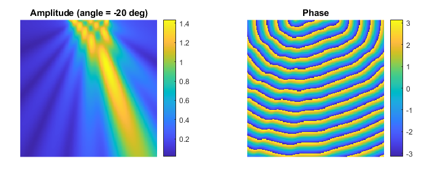

Simulating CW Fields Using The Acoustic Field Propagator Example
This example demonstrates how to use acousticFieldPropagator to simulate the steady-state pressure field from a steered line array in 2D without time stepping.
For a more detailed discussion of this example and the underlying techniques, see B. E. Treeby, J. Budisky, E. S. Wise, J. Jaros, and B. T. Cox, "Rapid calculation of acoustic fields from arbitrary continuous-wave sources," The Journal of the Acoustical Society of America, vol. 143, no. 1, pp.529-537, 2018.
Contents
Overview
When simulating the output from time-varying pressure sources, if the driving signal is a continuous wave sinusoid and the acoustic medium is lossless and homogeneous, the steady-state acoustic field can be calculated very rapidly (without time stepping) using the function acousticFieldPropagator. For this function, the source is defined as two matrices of amplitude and phase which capture both the source geometry (the amplitude matrix is set to zero outside the support of the source) and the distribution of amplitude and phase across the source. In this example, the output from a steered line array is calculated in 2D. The steering angle is swept from -60 to 60 degrees with no apodisation (the amplitude is set to one across the array). For each steering angle, the phase at each grid point in the line array is calculated.
% assign constant amplitude across the line array amp_in(x1, y1:y2) = 1; % get the current steering angle steering_angle = angle_array(index); % calculate phase offset for each grid point in the line array based on % element position and steering angle, and assign to the line array phase_in(x1, y1:y2) = 2 * pi * f0 * el_pos * sind(steering_angle) / c0;
Running the simulation
For each steering angle, the matrices of amplitude and phase along with the grid spacing, source frequency, and medium sound speed are passed to acousticFieldPropagator. This calculates the steady state acoustic field (amplitude and phase) over the same size domain as the input matrices. A plot of the calculated amplitude and phase for a steering angle of -20 degrees is shown below.
% compute beam pattern
[amp_out, phase_out] = acousticFieldPropagator(amp_in, phase_in, dx, f0, c0);

To replicate this simulation using kspaceFirstOrder2D, source.p_mask could be defined as amp_in with source.p created using createCWSignals along with the calculated phase offset for each steering angle. For simulations in 3D (which are conducted in an analogous fashion), the function acousticFieldPropagatorC can be used to reduce memory usage and compute time.